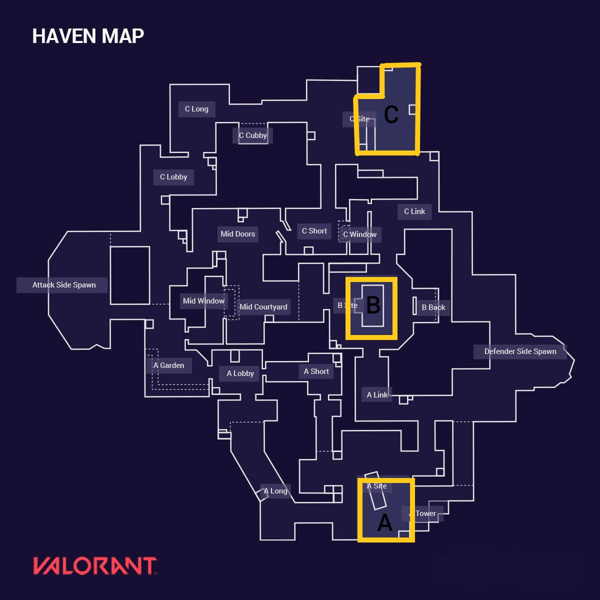

VALORANT
Valorant is a team-based first-person tactical hero shooter set in the near future. Players play as one of a
set of Agents, characters based on several countries and cultures around the world. In the main game mode,
players are assigned to either the attacking or defending team with each team having five players on it.

Attacker have to plant spike on given mark of map .As shown in picture

ROUNDS
- Win 13 round before they do.
- After 12 round side changes
- You get 1 life per round
- Attacker push to plant spike
- Defenders stop or defuse the spike
AGENTS
Agents are the playable characters in VALORANT, representing an agent of the VALORANT Protocol.
Each agent serves as a different class with four abilities and are mostly unlocked by
progressing through their Contract.
Before you enter your first round, you get to pick from a group of Agents, each with their own role and special skills designed to work alongside each other toward a win.
Five agents are immediately available for players to use; Brimstone, Jett, Phoenix, Sage, and Sova icon.png Sova. All other agents must be unlocked by progressing through each of their agent contracts and completing Tier 5. New players can also unlock two additional agents by progressing through the Play to Unlock contract and earning free agent unlocks at Tiers 5 and 10, which will immediately grant XP for the selected agent to reach Tier 5 of their contract and recruit the agent.
Each agent has 100 base HP (increased with shields) and four abilities, including a Signature and an Ultimate ability. Depending on their abilities and playstyle, agents will be assigned to one of four roles.
Before you enter your first round, you get to pick from a group of Agents, each with their own role and special skills designed to work alongside each other toward a win.
Five agents are immediately available for players to use; Brimstone, Jett, Phoenix, Sage, and Sova icon.png Sova. All other agents must be unlocked by progressing through each of their agent contracts and completing Tier 5. New players can also unlock two additional agents by progressing through the Play to Unlock contract and earning free agent unlocks at Tiers 5 and 10, which will immediately grant XP for the selected agent to reach Tier 5 of their contract and recruit the agent.
Each agent has 100 base HP (increased with shields) and four abilities, including a Signature and an Ultimate ability. Depending on their abilities and playstyle, agents will be assigned to one of four roles.
MAPS
Each match of VALORANT takes place on a map. Maps feature a spawn area for each team, barriers
that limit accessible areas during the Buy Phase, and objective sites where the spike is to be
planted.
Four maps were available at launch, and a six-month cycle is expected for the release of new maps.
There are currently nine playable maps in VALORANT, with an additional one for practice and training new players.
There are currently a total of nine Maps playable in Valorant. The current Map Pool is updated semi-frequently, so that only seven Valorant Maps are always currently in rotation.
Four maps were available at launch, and a six-month cycle is expected for the release of new maps.
There are currently nine playable maps in VALORANT, with an additional one for practice and training new players.
There are currently a total of nine Maps playable in Valorant. The current Map Pool is updated semi-frequently, so that only seven Valorant Maps are always currently in rotation.
WEAPONS
Agents have different variations of weapons, typically firearms, to cater to specific playstyles
or metas. Weapons are separated by two categories, Sidearms and Primary weapons. Sidearms
consists of pistols, whilst primaries include SMGs, shotguns, rifles, sniper rifles, and machine
guns.
Guns have limited amounts of ammo but come with reserve magazines. Bullets deal different amounts of damage depending on the gun, the body part they hit, and the distance between the shooter and the target. Each gun deals a set amount of damage to an enemy's body at its shortest range and then uses multipliers on this value to calculate the damage it will deal to the head and legs at close range and all body parts at further ranges. Resulting numbers with a decimal value are rounded down to the next integer value.
Weapons can be purchased by Agents using creds during the pre-round sequence. Each Agent is equipped with a Knife and the Classic sidearm for free by default. Agents will keep the weapons they purchase through each round until they die. Weapons can also be picked up off the ground from deceased players, both friendly and hostile, which will carry on with the player into the next round.
Weapon Skins are cosmetics in VALORANT that modify the appearance of weapons. They can be bought from the store with Valorant Points and can be upgraded using Radianite Points to further modify appearance. They can also be be bought from an active Night.Market or earned from a Battle Pass, and a few can be obtained for free by completing Contracts or Battle Passes.
Guns have limited amounts of ammo but come with reserve magazines. Bullets deal different amounts of damage depending on the gun, the body part they hit, and the distance between the shooter and the target. Each gun deals a set amount of damage to an enemy's body at its shortest range and then uses multipliers on this value to calculate the damage it will deal to the head and legs at close range and all body parts at further ranges. Resulting numbers with a decimal value are rounded down to the next integer value.
Weapons can be purchased by Agents using creds during the pre-round sequence. Each Agent is equipped with a Knife and the Classic sidearm for free by default. Agents will keep the weapons they purchase through each round until they die. Weapons can also be picked up off the ground from deceased players, both friendly and hostile, which will carry on with the player into the next round.
Weapon Skins are cosmetics in VALORANT that modify the appearance of weapons. They can be bought from the store with Valorant Points and can be upgraded using Radianite Points to further modify appearance. They can also be be bought from an active Night.Market or earned from a Battle Pass, and a few can be obtained for free by completing Contracts or Battle Passes.